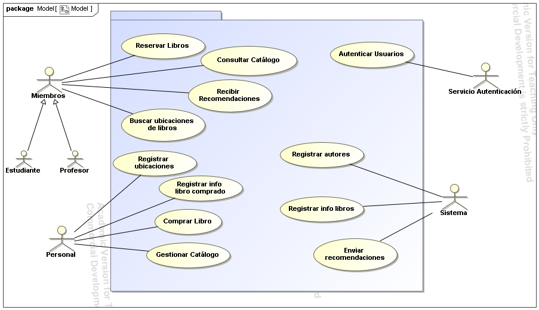

Actividad 3
Reflexión sobre lo aprendido EP2
Durante la realización de la segunda actividad (EP2), he aprendido diversos aspectos relacionados con el campo
de la Documentación de los Casos de Uso. He usado la herramienta Magic para poder dibujar el Diagrama y
posteriromente la plantilla proporcionada en el aula virtual para poder documentar un caso de uso.
Tras realizar una correción he validado bastantes preguntas. Sin embargo, he cometido un par de errores que
tendré en cuenta. Me ha faltado numerar los casos de uso, la generalización de los actores "Estudiante y
Profesor", las relaciones de dependencia "include" y "extend".
A pesar de estos errores, esta actividad me ha servido para reforzar mis habilidades en el modelado y
documentación de casos de uso, la generalización de actores, el uso de las relaciones de dependencia cuando corresponda, así como para comprender la importancia de cada elemento dentro de un diagrama
bien estructurado.
Diagrama de Casos de uso ( con Ernesto Vilalta Guerrero)
La dos nuevos casos de uso que hemos añadido son:
Autenticar usuarios: Permite que los usuarios inicien sesión en BiblioUJI y se verifique su autorización para acceder al sistema
Registrar ubicaciones: Registrar ubicaciones: Permite al personal bibliotecario ingresar y actualizar las ubicaciones físicas de los libros dentro del sistema.

Lista de Verificación
- ¿Se ha definido correctamente un actor generalizado para "Estudiante" y "Profesor"?
-
¿Existe algún caso de uso que no esté asociado a ningún actor?
-
¿Los casos de uso más pequeños han sido agrupados en un caso de uso más general?
-
¿Todos los actores están correctamente ubicados fuera del sistema?
-
¿Se han utilizado correctamente las relaciones de "include" y "extend" donde sea necesario?
Lista de Validación
Caso de uso a validar: Consultar Catálogo (CU01)
- ¿Se ha proporcionado un identificador único para el caso de uso?
-
¿Las precondiciones establecen correctamente que el usuario debe estar autenticado antes de realizar la consulta?
-
¿Se describe detalladamente la funcionalidad del caso de uso?
-
¿La secuencia normal del caso de uso sigue un flujo lógico y detallado, cubriendo todas las acciones del usuario y respuestas del sistema?
-
¿Las condiciones de finalización (éxito y fracaso) contemplan todos los posibles escenarios, incluyendo fallos en la conexión y catálogo vacío?